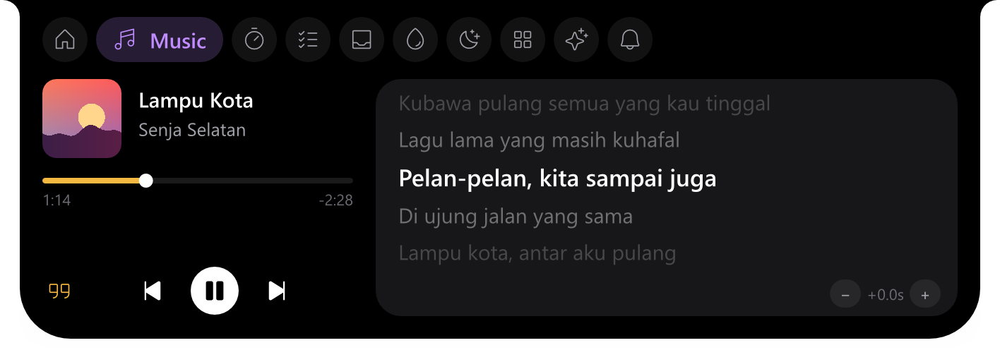
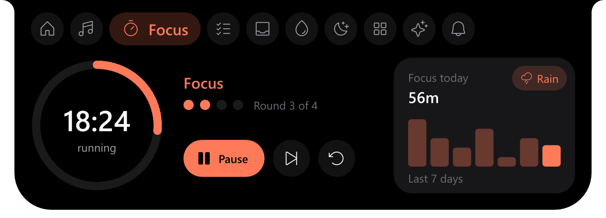
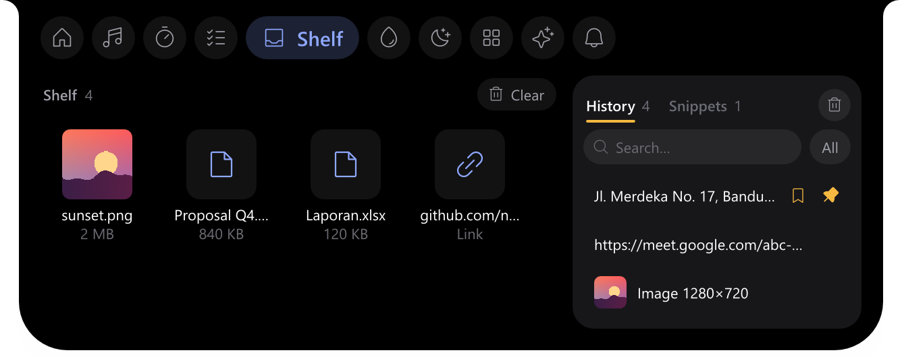
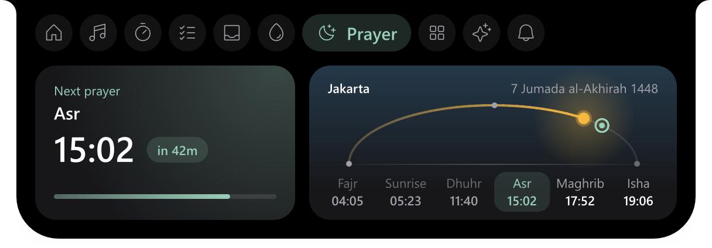
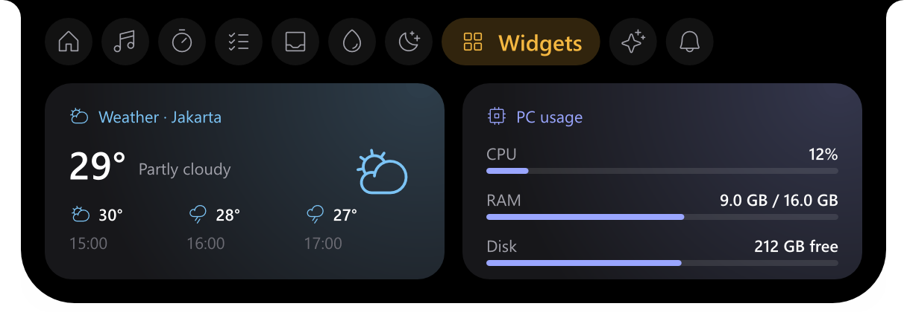
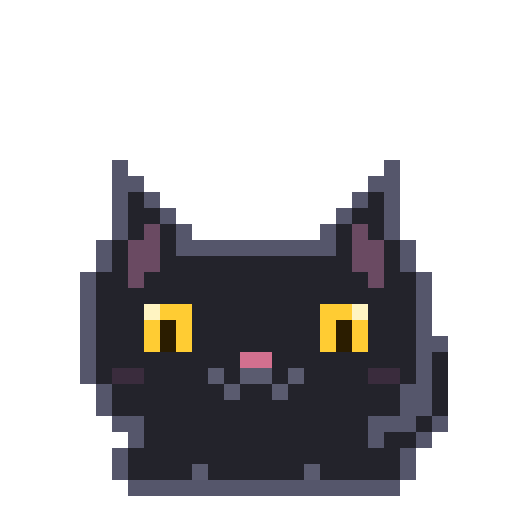

Home, arranged your way
A grid with the clock, the most pressing thing right now (a meeting, the next prayer, a task due, the song playing) and small widgets for battery, Wi-Fi, weather, CPU, water and more. Drag, resize, add and remove.
Free for Windows 10 and 11
A small black island at the top of your screen. Hover over it for your music and lyrics, focus timer, to-dos, files, clipboard, prayer times and widgets. Kopi the cat keeps watch.
Free · 5.5 MB installer · no account, no admin rights
Every frame is the app itself, drawn by its own renderer with sample data.
What lives in the notch
A grid with the clock, the most pressing thing right now (a meeting, the next prayer, a task due, the song playing) and small widgets for battery, Wi-Fi, weather, CPU, water and more. Drag, resize, add and remove.

Now playing from Spotify, YouTube Music in the browser, or any player that uses the Windows media controls. Seek, shuffle, volume, and lyrics that keep the current line in the middle.

Pomodoro rounds that survive sleep, a seven-day chart and streaks. Rain, waves, wind or a soft hum in the background, made in code and looped by Windows, so they cost no CPU.

Type “rapat besok 9” or “call mom in 2h” and the due time is set. Repeating tasks, checklists, quick add from anywhere with Ctrl+Alt+N, and your Google Calendar with a Join button for Meet, Zoom and Teams.

Drop files, links, text or images on the notch and drag them out later; your files are never moved. An encrypted, searchable clipboard history that skips password managers, plus snippets you paste again.

1,151 cities or your own location, seven calculation methods, the Hijri date and reminders. In Ramadan: imsak and iftar countdowns and a sahur reminder.

Weather, PC usage, the week, world clocks, a countdown, the moon phase and more. Closed, the notch stays small and peeks only when something happens.

Blinks, follows your cursor, naps, purrs when petted, and reacts to your music, focus, battery and more.
Select text anywhere and press Ctrl+Alt+Q to summarize, fix, translate or reply. Bring your own provider: OpenAI, Gemini, Groq, OpenRouter, Ollama.
Ctrl+Alt+T, drag a box, and the text is on your clipboard. Offline, with Windows OCR.
Windows toasts in the notch, with per-app rules and a privacy mode. One-time codes stay hidden, one tap copies them.
Volume, brightness, Caps Lock, input language, charger, Wi-Fi and headphones, shown where your eyes already are.
Island or floating, minimal mode, Glass, an accent colour, Indonesian or English. Every option applies live.
Light by design
Written in Go and drawn with Direct2D. No Electron, no WebView, no background polling.
Privacy
Free for Windows 10 (1809 or later) and Windows 11. The installer is per user, and Nuppi checks for updates itself.
Download for WindowsThe build is not code-signed yet, so SmartScreen may warn: choose More info, then Run anyway. Each release lists its SHA-256.